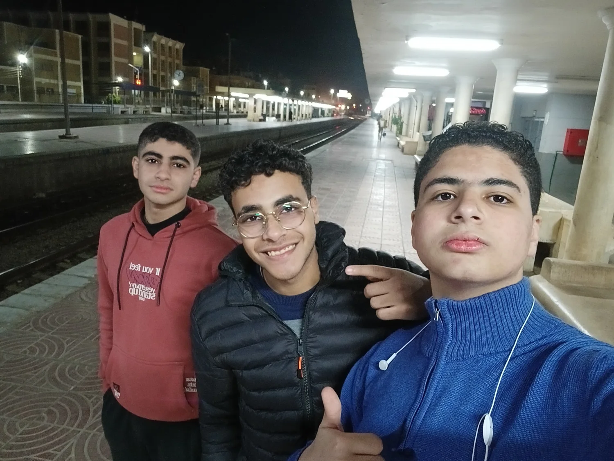

البداية من المدرسة
من مدرسة الشهيد مدحت طلعت في بنها، والفريق التقني، بدأنا نكتشف إننا نقدر نعمل حاجة أكبر مننا.
من أول أيام المدرسة، لحد كل فريق ومشروع وحلم كبرنا فيه سوا… إنت صاحب الرحلة، والرحلة لسه مكملة.
نفتح ألبوم الذكريات
من أولى ثانوي، للفرق والمشاريع والخروجات.
كل صورة وراها موقف، وكل موقف فيه حتة مننا.
الصور بتوثّق اللحظة. بس إحنا فاكرين الحكاية كلها.
من مدرسة الشهيد مدحت طلعت في بنها، والفريق التقني، بدأنا نكتشف إننا نقدر نعمل حاجة أكبر مننا.
من نائب القائد العام في SOT، للمدير الإداري في الفريق التقني بالقليوبية. كنت بتلمّ الدنيا وتظبط الشغل، وإحنا بنتعلم نشيل المسؤولية سوا.
تأسيس DIGITAL FUTURE، وورش التكنولوجيا والمنصات، وشغل الـ Chat Bot. من تنظيم معرض الكتاب لحد الكود… كل تجربة كانت بتزوّد حكاية.
يا يوسف،
كل سنة وإنت طيب يا صاحبي. يوسف محمد حازم صياد… الاسم طويل، بس مكانتك عندي أكبر بكتير.
إنت بالنسبالي مش مجرد زميل مدرسة ولا حد اشتغلت معاه في فريق. إنت صاحبي اللي كبرت معاه في الشغل والتجارب، وشيلنا مسؤوليات، واتعلمنا، وعملنا حاجات كنا في الأول فاكرينها بعيدة.
من SOT والفريق التقني، لـ DIGITAL FUTURE، وكل مشروع وكل يوم تنظيم… دايمًا كان فيه حكاية جديدة بتتضاف لحكايتنا. والمناصب حلوة وكل حاجة، بس أحلى حاجة إن وسط ده كله، إنت فضلت صاحبي.
مبسوط وأنا شايفك بتطوّر نفسك في JavaScript وReact، وبتبني طريقك حتة حتة. وعارف إن قدّامك حاجات كتير حلوة، وإن النسخة اللي جاية منك هتبقى جامدة… بس يا ريت من غير bugs كتير 😂
يارب سنتك الجديدة تبقى أخف على قلبك، وأقرب لأحلامك، ومليانة ناس بتحبك بجد. وتفضل الضحكة موجودة، والصور بتزيد، وإحنا لسه في نفس الفريق.
كل سنة وإنت أخويا، وصاحبي، وصاحب الرحلة.والباقي لسه هنكتبه سوا.